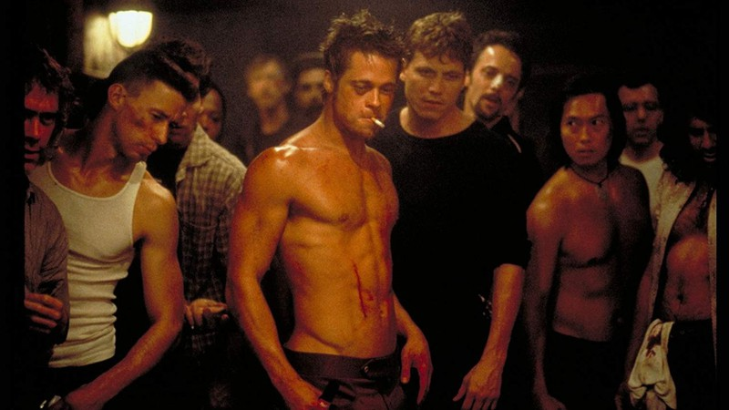

Controvérsias Emergem em Relação ao Filme "Clube da Luta" Enquanto Ganha Nova Atenção
São Paulo, 9 de Agosto de 2023 — O filme "Clube da Luta", lançado em 1999 e estrelado por Edward Norton e Brad Pitt, está enfrentando um ressurgimento inesperado de atenção, à medida que questões sociais e éticas contemporâneas vêm à tona, gerando debates e discussões acaloradas.O filme, que conta a história de um homem desencantado que forma um clube secreto que evolui para um movimento subversivo e violento, foi inicialmente recebido com opiniões mistas. Enquanto alguns elogiaram a crítica social e a abordagem provocativa da narrativa, outros questionaram a glorificação da violência e a mensagem que o filme poderia estar transmitindo.
No entanto, em anos recentes, "Clube da Luta" ganhou uma nova base de fãs, particularmente entre os jovens, que estão explorando o filme de maneiras mais profundas e interpretativas. A era digital trouxe à tona análises detalhadas sobre as complexidades dos personagens, bem como sua relevância em um mundo contemporâneo cada vez mais ansioso e desiludido.
No entanto, junto com esse ressurgimento veio uma série de críticas e questionamentos sobre as mensagens morais do filme. A glorificação da violência e a maneira como as questões de masculinidade tóxica são abordadas têm gerado debates acalorados nas redes sociais e fóruns online.
Especialistas em mídia e cultura têm se envolvido na discussão, destacando a importância de contextualizar a produção cultural em seu tempo e reconhecer as mudanças sociais que ocorreram desde então. Eles observam que "Clube da Luta" pode ser visto como um produto de sua época, mas também como um espelho que reflete preocupações sociais relevantes mesmo nos dias de hoje.
À medida que as discussões continuam a se intensificar, é evidente que "Clube da Luta" continua a ser um filme que provoca reflexões e debates profundos. A controvérsia em torno do filme, bem como sua nova onda de popularidade, destaca a complexidade das interações entre a cultura pop, os valores sociais e as mudanças de perspectiva ao longo do tempo.